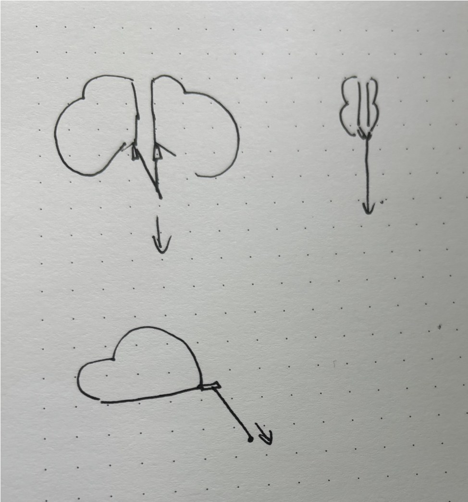
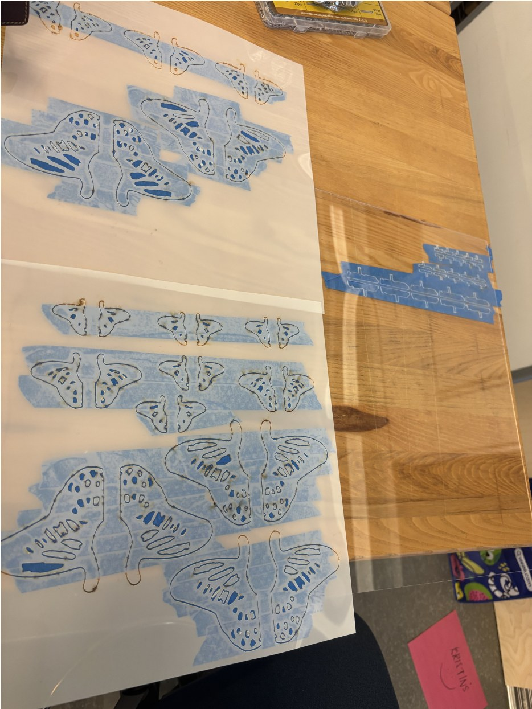
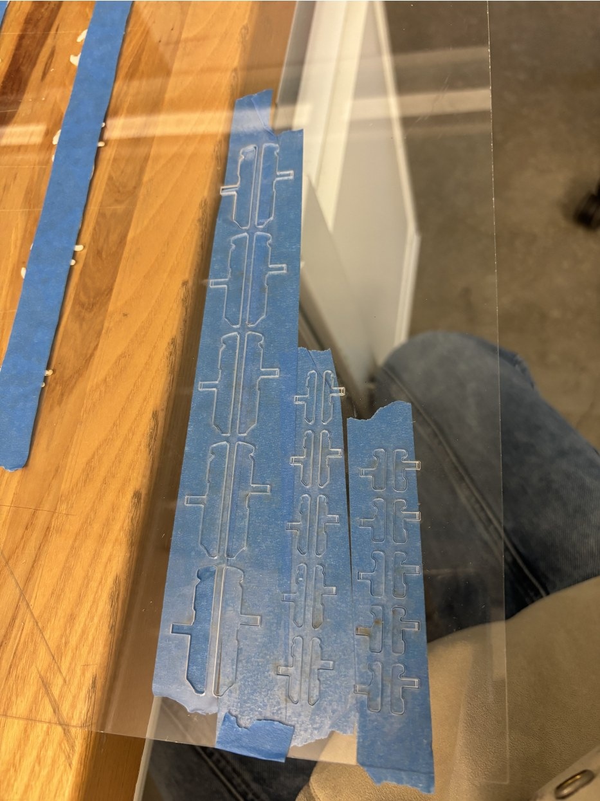
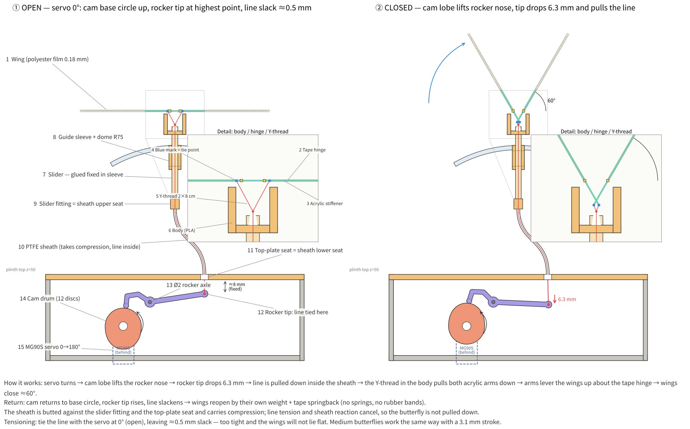
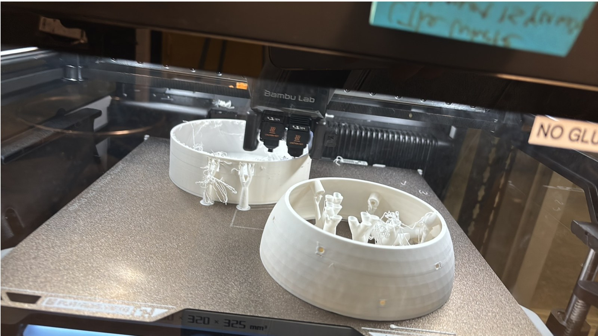
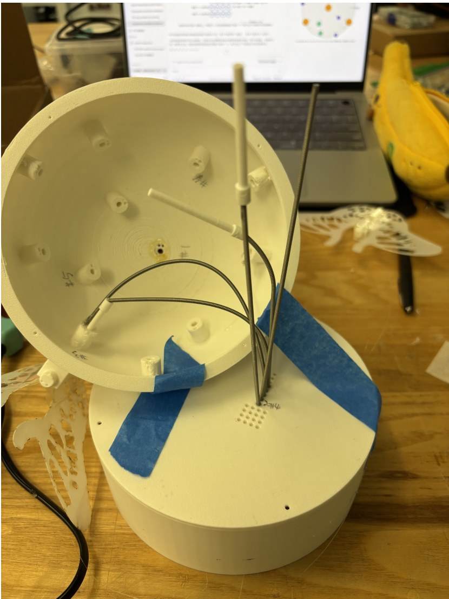
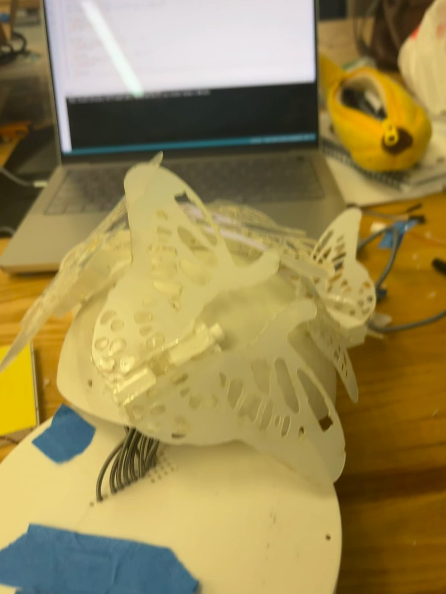
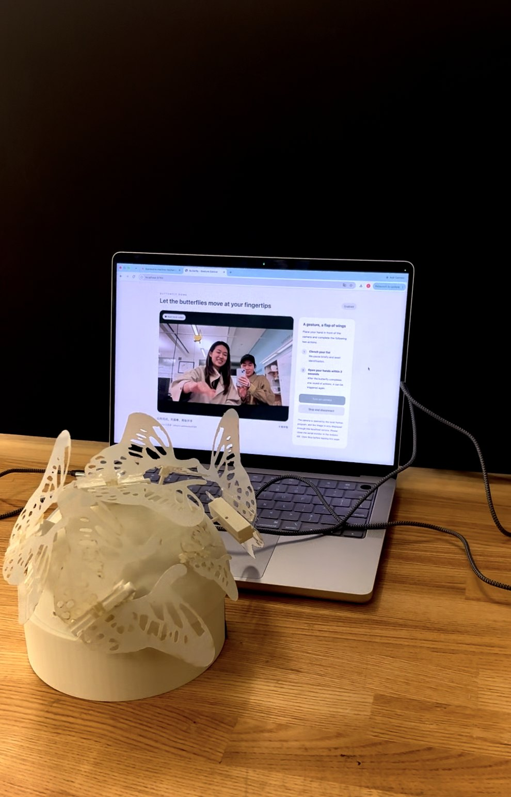

Week 12
Tuesday, Nov 10 · A new wing mechanism
✦ Splitting the wings



I split the butterfly's wings apart. Each wing sits on a base, and the base has two tabs sticking out to hold the fishing line. When the line is pulled down, the wings close.
✦ Basic mechanism validation 2
- Open: servo at 0°. The cam is on its base circle, the rocker tip is at its highest point, and the line has about 0.5mm of slack.
- Closed: the cam lobe lifts the rocker nose, the tip drops 6.3mm and pulls the line. The wings close by about 60°.

✦ System diagram
✦ Circuit
- Return: the cam goes back to its base circle, the rocker tip rises and the line slackens. The wings reopen under their own weight plus the springback of the tape. No springs, no rubber bands.
- Sheath: it is butted against the slider fitting and the top-plate seat, and carries the compression. The line tension and the sheath reaction cancel out, so the butterfly is not pulled down.
- Tensioning: tie the line with the servo at 0° (open), leaving about 0.5mm of slack. Too tight, and the wings won't lie flat.
- Medium butterflies work the same way, with a 3.15mm stroke.
✦ 3D printing


Thursday, Nov 12 · Assembling & final
✦ Servo movement validation
Testing the servo movement with the 3D printed cam and rocker, mounted on the base plate.
✦ Assembling process validation
At this point the butterflies could still open and close by themselves, and the opening range was large.

But once the servo was installed, the wings couldn't close any more. Probably because my line was too tight.
✦ Final

Reflection: all the dimensions were calculated from the materials I bought, so every channel was very small. I also only thought about how to hide the mechanical structure, not about how to make it easier to assemble. Because of this, I didn't apply the mechanism to all of the butterflies. I think the mechanism still needs further iteration.